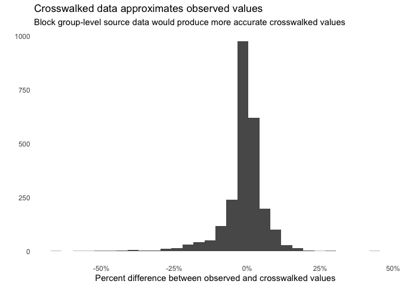

An R package providing a simple interface to access and apply crosswalks.
Overview
This package provides a consistent API and standardized versions of crosswalks to enable consistent approaches that work across different geography and year combinations. The package also facilitates interpolation–that is, adjusting source geography/year values by their crosswalk weights and translating these values to the desired target geography/year–including diagnostics of the joins between source data and crosswalks.
The package sources crosswalks from:
- Geocorr (Missouri Census Data Center) - for same-year crosswalks between geographies. Uses GeoCorr 2022 (2020 Census geography) for 2020s data and GeoCorr 2018 (2010 Census geography) for 2010s data. The correct version is selected automatically based on year context.
- IPUMS NHGIS - for inter-temporal crosswalks (across different census years)
- CT Data Collaborative - for Connecticut 2020→2022 crosswalks (planning region changes)
Why Use crosswalk?
- Programmatic access: No more manual downloads from web interfaces
- Standardized output: Consistent column names across all crosswalk sources
- Metadata tracking: Full provenance of crosswalks stored as attributes
- Crosswalk chaining: Automatic chaining when multiple crosswalks are required
- Local caching: Reproducible workflows with locally-cached crosswalks for speed
Installation
# Install from GitHub
renv::install("UI-Research/crosswalk")
#> # Downloading packages -------------------------------------------------------
#> - Downloading crosswalk 0.0.0.9001 from GitHub ... OK [95.7 Kb in 0.54s]
#> Successfully downloaded 1 package in 1 second.
#>
#> The following package(s) will be installed:
#> - crosswalk [UI-Research/crosswalk]
#> These packages will be installed into "C:/Users/wcurrangroome/AppData/Local/Temp/RtmpkTRpSB/temp_libpath1dfc460a4888".
#>
#> # Installing packages --------------------------------------------------------
#> - Installing crosswalk 0.0.0.9001 ... OK [built from source and cached in 2.1s]
#> Successfully installed 1 package in 2.4 seconds.Overview
First we obtain a crosswalk and apply it to our data:
library(crosswalk)
library(dplyr)
library(stringr)
library(sf)
source_data = tidycensus::get_acs(
year = 2023,
geography = "zcta",
output = "wide",
variables = c(below_poverty_level = "B17001_002")) %>%
dplyr::select(
source_geoid = GEOID,
count_below_poverty_level = below_poverty_levelE)
# Get a crosswalk from ZCTAs to PUMAs (same year, uses Geocorr (2022))
zcta_puma_crosswalk <- get_crosswalk(
source_geography = "zcta",
target_geography = "puma22",
weight = "population")
# Apply the crosswalk to your data
crosswalked_data <- crosswalk_data(
data = source_data,
crosswalk = zcta_puma_crosswalk)
## Or in a single step
crosswalked_data = crosswalk_data(
data = source_data,
source_geography = "zcta",
target_geography = "puma22",
weight = "population")What does the crosswalk(s) reflect and how was it sourced?
attr(crosswalked_data, "crosswalk_metadata")
#> $call_parameters
#> $call_parameters$source_geography
#> [1] "zcta"
#>
#> $call_parameters$target_geography
#> [1] "puma22"
#>
#> $call_parameters$source_year
#> NULL
#>
#> $call_parameters$target_year
#> NULL
#>
#> $call_parameters$weight
#> [1] "population"
#>
#> $call_parameters$cache
#> NULL
#>
#>
#> $data_source
#> [1] "geocorr"
#>
#> $data_source_full_name
#> [1] "Geocorr 2022 (Missouri Census Data Center)"
#>
#> $download_url
#> NULL
#>
#> $api_endpoint
#> [1] "https://mcdc.missouri.edu/cgi-bin/broker"
#>
#> $documentation_url
#> [1] "https://mcdc.missouri.edu/applications/geocorr2022.html"
#>
#> $citation_url
#> NULL
#>
#> $github_repository
#> NULL
#>
#> $source_geography
#> [1] "zcta"
#>
#> $source_geography_standardized
#> NULL
#>
#> $target_geography
#> [1] "puma22"
#>
#> $target_geography_standardized
#> NULL
#>
#> $source_year
#> NULL
#>
#> $target_year
#> NULL
#>
#> $reference_year
#> [1] "2022"
#>
#> $weighting_variable
#> [1] "population"
#>
#> $state_coverage
#> NULL
#>
#> $notes
#> NULL
#>
#> $retrieved_at
#> [1] "2026-02-02 13:20:20 EST"
#>
#> $cached
#> [1] FALSE
#>
#> $cache_path
#> NULL
#>
#> $read_from_cache
#> NULL
#>
#> $is_multi_step
#> [1] FALSE
#>
#> $crosswalk_package_version
#> [1] "0.0.0.9001"How well did the crosswalk join to our source data?
## look at all the characteristics of the join(s) between the source data
## and the crosswalks
join_quality = attr(crosswalked_data, "join_quality")
## what share of records in the source data do not join to a crosswalk and
## thus are dropped during the crosswalking process?
join_quality$pct_data_unmatched
#> [1] 0.4234277
## zctas aren't nested within states, otherwise join_quality$state_analysis_data
## would help us to ID whether non-joining source data were clustered within one
## or a few states. instead we can join to spatial data to diagnose further:
zctas_sf = tigris::zctas(year = 2023)
#> | | | 0% | | | 1% | |= | 1% | |= | 2% | |== | 2% | |== | 3% | |== | 4% | |=== | 4% | |=== | 5% | |==== | 5% | |==== | 6% | |===== | 6% | |===== | 7% | |===== | 8% | |====== | 8% | |====== | 9% | |======= | 9% | |======= | 10% | |======= | 11% | |======== | 11% | |======== | 12% | |========= | 12% | |========= | 13% | |========= | 14% | |========== | 14% | |========== | 15% | |=========== | 15% | |=========== | 16% | |============ | 16% | |============ | 17% | |============ | 18% | |============= | 18% | |============= | 19% | |============== | 19% | |============== | 20% | |============== | 21% | |=============== | 21% | |=============== | 22% | |================ | 22% | |================ | 23% | |================ | 24% | |================= | 24% | |================= | 25% | |================== | 25% | |================== | 26% | |=================== | 26% | |=================== | 27% | |=================== | 28% | |==================== | 28% | |==================== | 29% | |===================== | 29% | |===================== | 30% | |===================== | 31% | |====================== | 31% | |====================== | 32% | |======================= | 32% | |======================= | 33% | |======================= | 34% | |======================== | 34% | |======================== | 35% | |========================= | 35% | |========================= | 36% | |========================== | 36% | |========================== | 37% | |========================== | 38% | |=========================== | 38% | |=========================== | 39% | |============================ | 39% | |============================ | 40% | |============================ | 41% | |============================= | 41% | |============================= | 42% | |============================== | 42% | |============================== | 43% | |============================== | 44% | |=============================== | 44% | |=============================== | 45% | |================================ | 45% | |================================ | 46% | |================================= | 46% | |================================= | 47% | |================================= | 48% | |================================== | 48% | |================================== | 49% | |=================================== | 49% | |=================================== | 50% | |=================================== | 51% | |==================================== | 51% | |==================================== | 52% | |===================================== | 52% | |===================================== | 53% | |===================================== | 54% | |====================================== | 54% | |====================================== | 55% | |======================================= | 55% | |======================================= | 56% | |======================================== | 56% | |======================================== | 57% | |======================================== | 58% | |========================================= | 58% | |========================================= | 59% | |========================================== | 59% | |========================================== | 60% | |========================================== | 61% | |=========================================== | 61% | |=========================================== | 62% | |============================================ | 62% | |============================================ | 63% | |============================================ | 64% | |============================================= | 64% | |============================================= | 65% | |============================================== | 65% | |============================================== | 66% | |=============================================== | 66% | |=============================================== | 67% | |=============================================== | 68% | |================================================ | 68% | |================================================ | 69% | |================================================= | 69% | |================================================= | 70% | |================================================= | 71% | |================================================== | 71% | |================================================== | 72% | |=================================================== | 72% | |=================================================== | 73% | |=================================================== | 74% | |==================================================== | 74% | |==================================================== | 75% | |===================================================== | 75% | |===================================================== | 76% | |====================================================== | 76% | |====================================================== | 77% | |====================================================== | 78% | |======================================================= | 78% | |======================================================= | 79% | |======================================================== | 79% | |======================================================== | 80% | |======================================================== | 81% | |========================================================= | 81% | |========================================================= | 82% | |========================================================== | 82% | |========================================================== | 83% | |========================================================== | 84% | |=========================================================== | 84% | |=========================================================== | 85% | |============================================================ | 85% | |============================================================ | 86% | |============================================================= | 86% | |============================================================= | 87% | |============================================================= | 88% | |============================================================== | 88% | |============================================================== | 89% | |=============================================================== | 89% | |=============================================================== | 90% | |=============================================================== | 91% | |================================================================ | 91% | |================================================================ | 92% | |================================================================= | 92% | |================================================================= | 93% | |================================================================= | 94% | |================================================================== | 94% | |================================================================== | 95% | |=================================================================== | 95% | |=================================================================== | 96% | |==================================================================== | 96% | |==================================================================== | 97% | |==================================================================== | 98% | |===================================================================== | 98% | |===================================================================== | 99% | |======================================================================| 99% | |======================================================================| 100%
states_sf = tigris::states(year = 2023, cb = TRUE)
#> | | | 0% | |= | 1% | |= | 2% | |== | 3% | |== | 4% | |=== | 4% | |==== | 5% | |==== | 6% | |===== | 7% | |===== | 8% | |====== | 8% | |====== | 9% | |======= | 10% | |======= | 11% | |======== | 11% | |======== | 12% | |========= | 13% | |========== | 14% | |========== | 15% | |=========== | 15% | |=========== | 16% | |============ | 17% | |============ | 18% | |============= | 18% | |============= | 19% | |============== | 20% | |============== | 21% | |=============== | 21% | |=============== | 22% | |================ | 22% | |================ | 23% | |================= | 24% | |================= | 25% | |================== | 25% | |================== | 26% | |=================== | 27% | |=================== | 28% | |==================== | 28% | |==================== | 29% | |===================== | 30% | |====================== | 31% | |====================== | 32% | |======================= | 32% | |======================= | 33% | |======================== | 34% | |======================== | 35% | |========================= | 35% | |========================= | 36% | |========================== | 37% | |========================== | 38% | |=========================== | 38% | |=========================== | 39% | |============================ | 39% | |============================ | 40% | |============================= | 41% | |============================= | 42% | |============================== | 42% | |============================== | 43% | |=============================== | 44% | |=============================== | 45% | |================================ | 45% | |================================ | 46% | |================================= | 47% | |================================= | 48% | |================================== | 48% | |================================== | 49% | |=================================== | 49% | |=================================== | 50% | |==================================== | 51% | |==================================== | 52% | |===================================== | 52% | |===================================== | 53% | |====================================== | 54% | |====================================== | 55% | |======================================= | 55% | |======================================= | 56% | |======================================== | 57% | |========================================= | 58% | |========================================= | 59% | |========================================== | 59% | |========================================== | 60% | |=========================================== | 61% | |=========================================== | 62% | |============================================ | 62% | |============================================ | 63% | |============================================= | 64% | |============================================= | 65% | |============================================== | 65% | |============================================== | 66% | |=============================================== | 66% | |=============================================== | 67% | |================================================ | 68% | |================================================ | 69% | |================================================= | 70% | |================================================= | 71% | |================================================== | 71% | |================================================== | 72% | |=================================================== | 73% | |=================================================== | 74% | |==================================================== | 74% | |==================================================== | 75% | |===================================================== | 75% | |===================================================== | 76% | |====================================================== | 77% | |====================================================== | 78% | |======================================================= | 78% | |======================================================= | 79% | |======================================================== | 80% | |======================================================== | 81% | |========================================================= | 81% | |========================================================= | 82% | |========================================================== | 83% | |=========================================================== | 84% | |=========================================================== | 85% | |============================================================ | 85% | |============================================================ | 86% | |============================================================= | 87% | |============================================================= | 88% | |============================================================== | 88% | |============================================================== | 89% | |=============================================================== | 90% | |=============================================================== | 91% | |================================================================ | 91% | |================================================================ | 92% | |================================================================= | 92% | |================================================================= | 93% | |================================================================== | 94% | |================================================================== | 95% | |=================================================================== | 95% | |=================================================================== | 96% | |==================================================================== | 97% | |==================================================================== | 98% | |===================================================================== | 98% | |===================================================================== | 99% | |======================================================================| 100%
## apart from DC, which has a disproportionate number of non-joining ZCTAs--
## seemingly corresponding to federal areas and buildings--the distribution of
## non-joining ZCTAs appears proportionate to state-level populations and is
## distributed across many states:
zctas_sf %>%
dplyr::filter(GEOID20 %in% join_quality$data_geoids_unmatched) %>%
sf::st_intersection(states_sf %>% select(NAME)) %>%
sf::st_drop_geometry() %>%
dplyr::count(NAME, sort = TRUE)
#> NAME n
#> 1 District of Columbia 19
#> 2 New York 15
#> 3 Texas 9
#> 4 California 8
#> 5 Colorado 6
#> 6 Utah 6
#> 7 Florida 5
#> 8 Pennsylvania 5
#> 9 Tennessee 5
#> 10 Virginia 5
#> 11 Alabama 4
#> 12 Arizona 4
#> 13 Kentucky 4
#> 14 Maryland 4
#> 15 Ohio 4
#> 16 Washington 4
#> 17 Georgia 3
#> 18 Louisiana 3
#> 19 Michigan 3
#> 20 North Carolina 3
#> 21 Alaska 2
#> 22 Massachusetts 2
#> 23 Mississippi 2
#> 24 North Dakota 2
#> 25 Arkansas 1
#> 26 Hawaii 1
#> 27 Idaho 1
#> 28 Illinois 1
#> 29 Indiana 1
#> 30 Iowa 1
#> 31 Kansas 1
#> 32 Maine 1
#> 33 Minnesota 1
#> 34 Missouri 1
#> 35 Montana 1
#> 36 Nebraska 1
#> 37 Nevada 1
#> 38 New Mexico 1
#> 39 Oregon 1
#> 40 South Carolina 1
#> 41 Vermont 1
#> 42 Wisconsin 1And how accurate was the crosswalking process?
comparison_data = tidycensus::get_acs(
year = 2023,
geography = "puma",
output = "wide",
variables = c(
below_poverty_level = "B17001_002")) %>%
dplyr::select(
source_geoid = GEOID,
count_below_poverty_level_acs = below_poverty_levelE)
combined_data = dplyr::left_join(
comparison_data,
crosswalked_data,
by = c("source_geoid" = "geoid"))
combined_data %>%
dplyr::select(source_geoid, dplyr::matches("count")) %>%
dplyr::mutate(difference_percent = (count_below_poverty_level_acs - count_below_poverty_level) / count_below_poverty_level_acs) %>%
ggplot2::ggplot() +
ggplot2::geom_histogram(ggplot2::aes(x = difference_percent)) +
ggplot2::theme_minimal() +
ggplot2::theme(panel.grid = ggplot2::element_blank()) +
ggplot2::scale_x_continuous(labels = scales::percent) +
ggplot2::labs(
title = "Crosswalked data approximates observed values",
subtitle = "Block group-level source data would produce more accurate crosswalked values",
y = "",
x = "Percent difference between observed and crosswalked values")
Core Functions
The package has two main functions, though you can also specify the needed crosswalk(s) directly from crosswalk_data() and omit the intermediate get_crosswalk() call.
| Function | Purpose |
|---|---|
get_crosswalk() |
Fetch crosswalk(s) |
crosswalk_data() |
Apply crosswalk(s) to interpolate data to the target geography-year |
Understanding get_crosswalk() Output
get_crosswalk() always returns a list structured as follows:
result <- get_crosswalk(
source_geography = "tract",
target_geography = "zcta",
source_year = 2010,
target_year = 2020,
weight = "population")
names(result)
#> [1] "crosswalks" "plan" "message"
#> [1] "crosswalks" "plan" "message"The list contains three elements:
| Element | Description |
|---|---|
crosswalks |
A named list of crosswalks (step_1, step_2, etc.) of length one or greater |
plan |
Details about what crosswalks are being fetched |
message |
A human-readable description of the crosswalk chain |
Single-Step vs. Multi-Step Crosswalks
Single-step crosswalks (same year, different geography OR same geography, different year):
# Same year, different geography (Geocorr)
result <- get_crosswalk(
source_geography = "tract",
target_geography = "zcta",
weight = "population")
# result$crosswalks$step_1 contains one crosswalk
# Same geography, different year (NHGIS)
result <- get_crosswalk(
source_geography = "tract",
target_geography = "tract",
source_year = 2010,
target_year = 2020)
# result$crosswalks$step_1 contains one crosswalkMulti-step crosswalks (when a single, direct crosswalk is not available):
For some source year/geography -> target year/geography specifications do not have a crosswalk. In such cases, two or more crosswalks may be needed. The package automatically plans and fetches the required crosswalks:
- Step 1 (NHGIS): Change year, keep geography constant
- Step 2 (Geocorr): Change geography at target year
result <- get_crosswalk(
source_geography = "tract",
target_geography = "zcta",
source_year = 2010,
target_year = 2020,
weight = "population")
# Two crosswalks are returned
names(result$crosswalks)
#> [1] "step_1" "step_2"
#> [1] "step_1" "step_2"
# Step 1: 2010 tracts -> 2020 tracts (NHGIS)
# Step 2: 2020 tracts -> 2020 ZCTAs (Geocorr)Crosswalk Structure
Each crosswalk contains standardized columns:
| Column | Description |
|---|---|
source_geoid |
Identifier for source geography |
target_geoid |
Identifier for target geography |
allocation_factor_source_to_target |
Weight for interpolating values |
weighting_factor |
What attribute was used (population, housing, land) |
Additional columns may include source_year, target_year, population_2020, housing_2020 (or population_2010, housing_2010 for 2010s-vintage crosswalks), and land_area_sqmi depending on the source of the crosswalk.
Accessing Metadata
Each crosswalk tibble has a crosswalk_metadata attribute that documents what the crosswalk represents and how it was created:
metadata <- attr(result$crosswalks$step_1, "crosswalk_metadata")
names(metadata)
#> [1] "call_parameters" "data_source"
#> [3] "data_source_full_name" "download_url"
#> [5] "api_endpoint" "documentation_url"
#> [7] "citation_url" "github_repository"
#> [9] "source_geography" "source_geography_standardized"
#> [11] "target_geography" "target_geography_standardized"
#> [13] "source_year" "target_year"
#> [15] "reference_year" "weighting_variable"
#> [17] "state_coverage" "notes"
#> [19] "retrieved_at" "cached"
#> [21] "cache_path" "read_from_cache"
#> [23] "is_multi_step" "crosswalk_package_version"
#> [1] "call_parameters" "data_source" "data_source_full_name" "download_url" ...Using crosswalk_data() to Interpolate Data
crosswalk_data() applies crosswalk weights to transform your data. It automatically handles multi-step crosswalks. If you’re in a hurry, you can omit a call to get_crosswalk() and specify the needed crosswalk parameters to crosswalk_data(), which will pass these to get_crosswalk() behind the scenes.
Column Naming Convention
The function auto-detects columns based on prefixes:
| Prefix | Treatment |
|---|---|
count_ |
Summed after weighting (for counts like population, housing units) |
mean_, median_, percent_, ratio_
|
Weighted mean (for rates, percentages, averages) |
You can also specify columns explicitly via count_columns and non_count_columns. All non-count variables are interpolated using weighted means, weighting by the allocation factor from the crosswalk.
Supported Geography and Year Combinations
Inter-Geography Crosswalks (Geocorr)
The package supports inter-geography crosswalks for both 2020s and 2010s Census geographies, automatically selecting the correct GeoCorr version based on the year context you provide.
2020s geography (GeoCorr 2022, 2020 Census): Used when years are 2020+, or when no year is specified.
- block, block group, tract, county
- place, zcta, puma22
- cd118, cd119, urban_area, core_based_statistical_area
2010s geography (GeoCorr 2018, 2010 Census): Used when years are in the 2010s (2010-2019).
- block, block group, tract, county
- place, zcta, puma12
- cd115, cd116
Inter-Temporal Crosswalks (NHGIS)
NHGIS provides cross-decade crosswalks with the following structure:
Source geographies: block, block_group, tract
Target geographies: - From blocks (decennial years only): block, block_group, tract, county, place, zcta, puma, urban_area, cbsa - From block_group or tract: block_group, tract, county
| Source Years | Target Years |
|---|---|
| 1990, 2000 | 2010, 2014, 2015, 2020, 2022 |
| 2010, 2011, 2012, 2014, 2015 | 1990, 2000, 2020, 2022 |
| 2020, 2022 | 1990, 2000, 2010, 2014, 2015 |
Notes: - Within-decade crosswalks (e.g., 2010→2014) are not available from NHGIS - Block→ZCTA, Block→PUMA, etc. are only available for decennial years (1990, 2000, 2010, 2020) - The package automatically uses direct NHGIS crosswalks when available (e.g., get_crosswalk(source_geography = "block", target_geography = "zcta", source_year = 2010, target_year = 2020) returns a single-step NHGIS crosswalk)
API Keys
NHGIS crosswalks require an IPUMS API key. Get one at https://account.ipums.org/api_keys and add to your .Renviron:
usethis::edit_r_environ()
# Add: IPUMS_API_KEY=your_key_hereCaching
Use the cache parameter to save crosswalks locally for ease:
result <- get_crosswalk(
source_geography = "tract",
target_geography = "zcta",
weight = "population",
cache = here::here("crosswalks-cache"))Citations
The intellectual credit for the underlying crosswalks belongs to the original developers.
For NHGIS, see citation requirements at: https://www.nhgis.org/citation-and-use-nhgis-data
For Geocorr, suggested citations:
Missouri Census Data Center, University of Missouri. (2022). Geocorr 2022: Geographic Correspondence Engine. Retrieved from: https://mcdc.missouri.edu/applications/geocorr2022.html
Missouri Census Data Center, University of Missouri. (2018). Geocorr 2018: Geographic Correspondence Engine. Retrieved from: https://mcdc.missouri.edu/applications/geocorr2018.html
For CTData, a suggested citation (adjust for alternate source geography):
CT Data Collaborative. (2023). 2022 Census Tract Crosswalk. Retrieved from: https://github.com/CT-Data-Collaborative/2022-tract-crosswalk.
For this package, refer here: https://ui-research.github.io/crosswalk/authors.html#citation